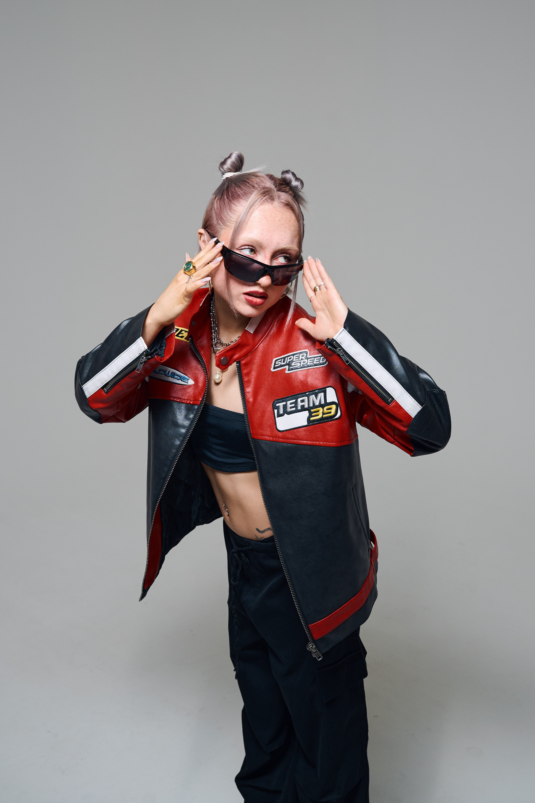
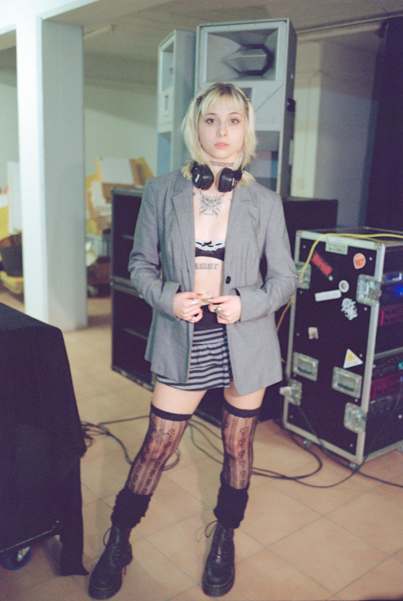

DJ's

JESS MAWI
Swiss-based DJ Jess Mawi blends driving Tech House with 90s Piano House and a subtle Brazilian soul. Featuring her own original tracks and an infectious, up-tempo energy, she creates euphoric, feel-good moments for the floor.

BINA
BINA is a Switzerland-based DJ whose sound moves between groove-driven hypnosis, energetic bounce and harder, driving techno. Rooted in hard groove and forward-pushing sounds, her sets combine rolling rhythms, powerful low ends and sharp, playful details that keep the dancefloor in constant motion. Precise, dynamic and deeply rhythmic, her sound is built for movement and impact.

NELLA
Bouncy Sounds, groovy Energy und Hard Trance! Nella bringt Power auf den Dancefloor. Ihre Sets leben von energiegeladenem sound, der die crowd mitzieht. Immer laut, immer mit Gefühl und immer für den Moment.

TWENNY5
Twenny5 is an exciting female DJ duo from Basel, CH. They are currently bringing a mix of sets consisting of Fast House and Trance, Hardgroove and DnB to the electronic music scene. The variety of genres shows versatility and passion for different rhythms. In early 2022, Twenny5 launched their own event label, Heatwaves, creating a plattform for parties that fuse good vibes with creative artwork, featuring artists from across the globe.

KSO12
KSO12 is a Swiss DJ based in Zurich. After winning Amsterdam’s Seedj contest and playing at Italy’s PHASE 2 Festival, she became a regular presence within Switzerland’s club scene, performing at venues including Elysia, Nordstern, Hive, and Kauz. As a resident DJ for Adroit since 2024, she continues to develop her sound through sets that combine techno with influences from across the electronic spectrum, always placing mixing and musical storytelling at the center.

SANEM
Sanem is a DJ from Switzerland. She grew up there and discovered her love for electronic music early on. Her sets mix hard techno and psytrance, creating a fast and energetic vibe that gets people moving. From a young age, she was drawn to electronic music and quickly found her passion behind the decks. Her style brings together the raw energy of hard techno with the trippy sounds of psytrance. By mixing these two worlds, she creates a unique sound that keeps her sets intense, dynamic, and full of surprises. Sanem loves to take her crowd on a journey—fast, powerful, and deeply rhythmic.